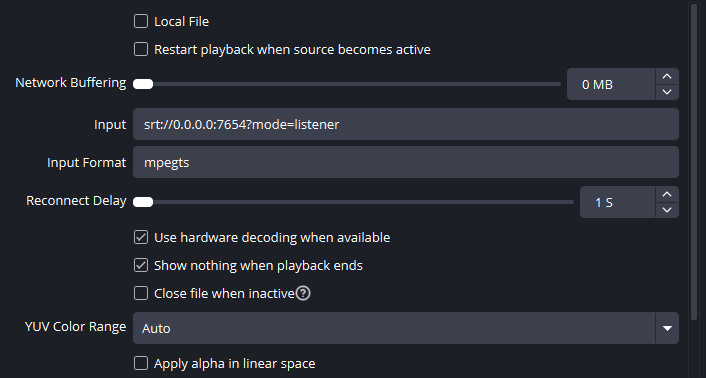
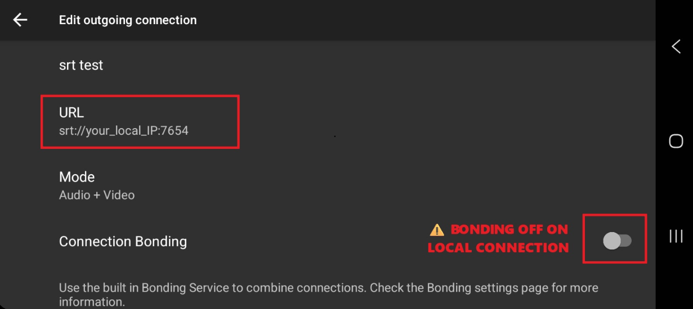

A streamlined guide to getting your Android camera feed into OBS using an SRT connection with no external servers.
Follow these steps when your phone and streaming PC are on the exact same WiFi network. ⚠️ Keep in mind you will not be able to use bonding on your local network.
Win + R, type cmd, and hit Enter.ipconfig and press Enter.192.168.1.X) and write it down.srt://0.0.0.0:7654?mode=listenermpegts
srt://[YOUR_LOCAL_IP]:7654 (Replace [YOUR_LOCAL_IP] with the address from Step 1).
To stream from outside your house using 4G/5G, you must allow the video feed through your home internet router.
7654 using Protocol UDP to your OBS PC's Local IP address (from Phase 1).whatismyip.com to find your Public IPv4 Address.srt://[YOUR_PUBLIC_IP]:7654